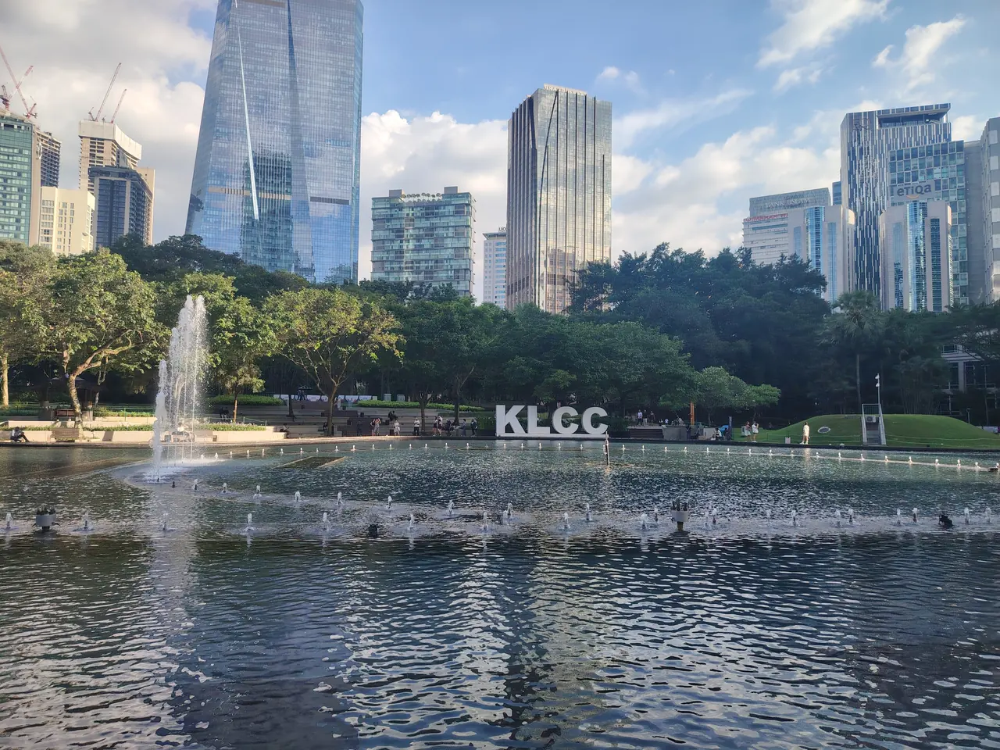

Travels
Stories, routes and real budgets from my trips.
My travel goal
Travel to at least 50 countries before I turn 35.
Visited so far
 Malaysia
Malaysia- Nepal
- India
3
of 50 countries
Travel stories

Stories, routes and real budgets from my trips.
My travel goal
Visited so far
